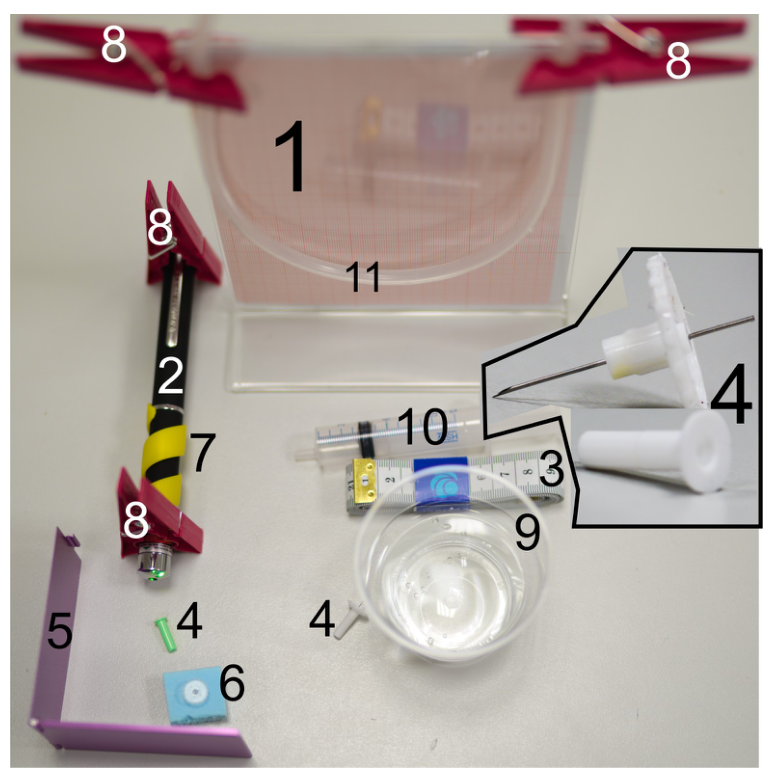
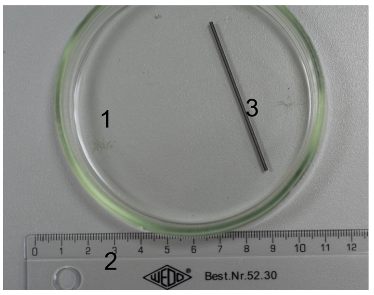
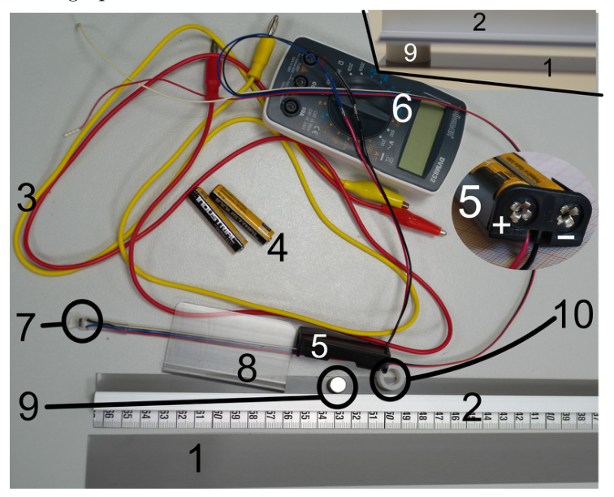
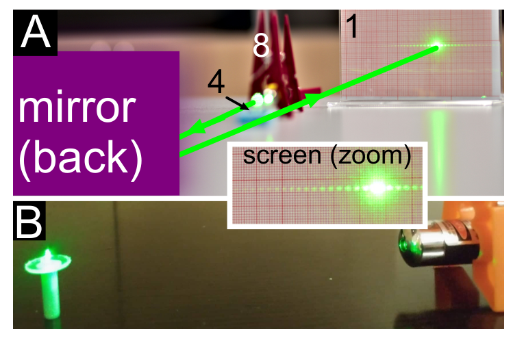
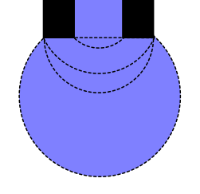
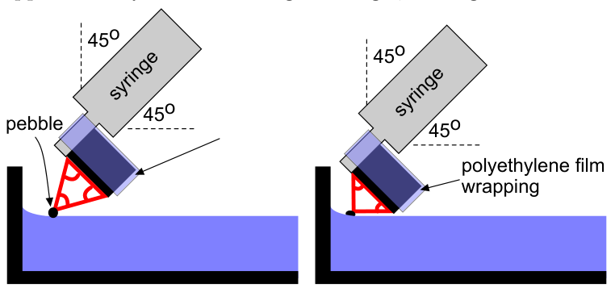
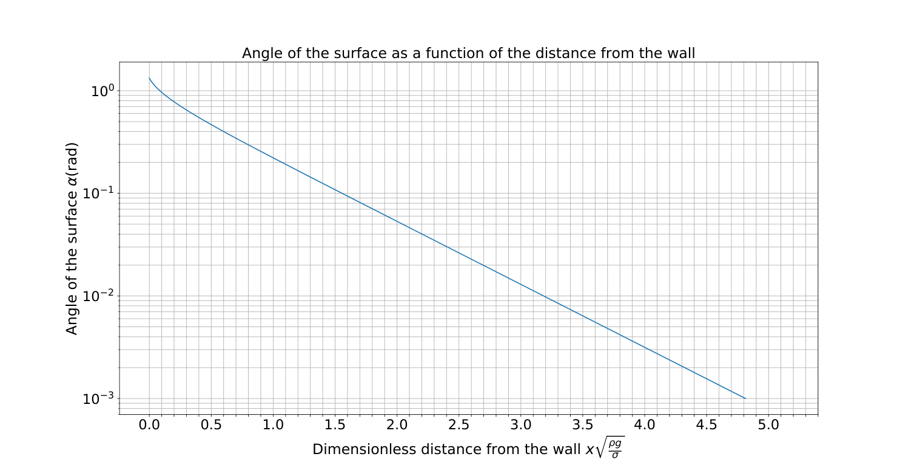
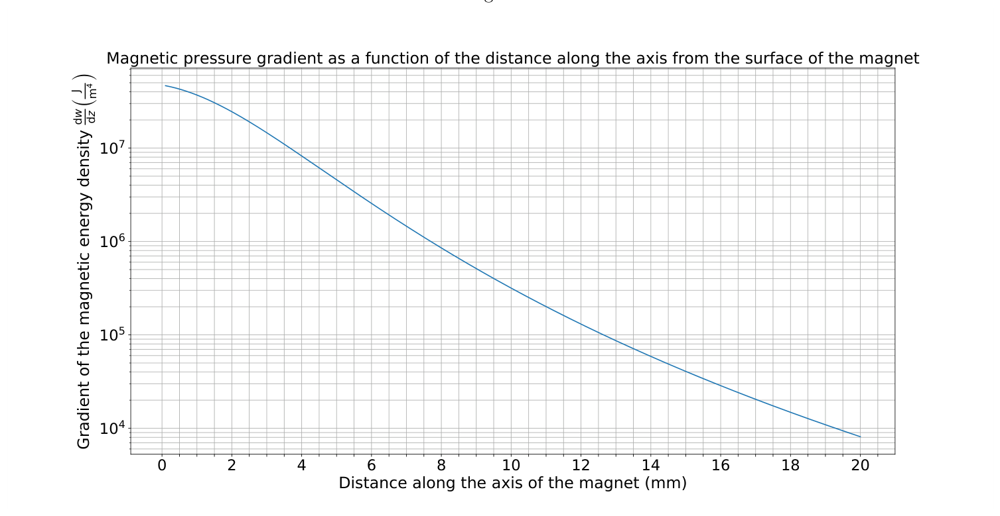

Problem E1. Magnetic properties of matter (20 points)
The aim of this experiment is to measure magnetism-related characteristics of dia- and ferromagnetic materials. To reach this goal, some other measurements are also required — e.g. measuring the diameter of the syringe needle, and the coefficient of surface tension of water.
Equipment

Figure 1. The following equipment is listed in figure 1:
- a stand;
- green laser pointer
- a measuring tape;
- green and white syringe needles, one end of the needle is sharp, and the other end is cut perpendicularly to its axis, see the insert in fig 1
- a foldable mirror
- a piece of foam
- a spiral plastic fixator that keeps the laser pointer button pressed;
- clothespins;
- a cup with water;
- a syringe;
- a silicone tube.

Figure 2. The following equipment is listed in figure 2:
- a Petri dish;
- a ruler;
- a graphite bar.

Figure 3. The following equipment is listed in figure 3:
- a stand-alone ferromagnetic strip;
- a ferromagnetic strip reinforced with an aluminium bar and equipped with a measuring tape;
- wires with crocodile clips;
- batteries;
- a battery holder;
- a multimeter;
- a resistive magnetic field sensor;
- a plastic clamp for fixing the orientation of the sensor;
- a magnet;
- a plastic spacer to keep the strip (2) strictly horizontal.
Not shown in the figures: a piece of polyethylene film for wrapping the magnet.
WARNINGS:
- Do not bend the ferromagnet, as it will become unusable! If bent, no replacement will be provided and you will get no marks for that part.
- Avoid direct or reflected laser beams hitting your eye, this can be harmful to your eye!
- The syringe needles are sharp, avoid puncturing yourself!
- Avoid short-circuiting the battery leads — the battery will overheat and become unusable!
- Power off the multimeter and the laser when not in use, in order to conserve the batteries.
Tasks
Part A. Diameter of the syringe needle (3 points)
Determine the diameter of the syringe needles using the following procedure.
Put the syringe standing vertically onto table, with its plastic cap downside as shown in Fig 4B, install the laser with the help of the clothspins as shown in the figure, and direct the laser beam onto the needle. If the laser beam is too high (i.e. passes the needle above it), you may use the piece of foam as shown in Fig 4A (insert the sharp end of the green syringe needle into the foam so that it will stand vertically). If the laser beam is slightly too low, you may use a folded sheet of paper to raise it. If the laser runs out of battery, you may ask for a replacement. Use the mirror to increase the length of the laser beam (see Fig 4A). Measure the distance between diffraction maxima on the screen as precisely as possible (explain how you achieved the best possible accuracy). Measure the length of the light beam from the syringe needle to the screen and calculate the diameter of the needle. Wavelength of the laser beam is .
Estimate the uncertainty of your result. Repeat the procedure with the white needle.

Figure 4.
Part B. Surface tension of water (4 points)
Fill the silicon tube with water — you may use the syringe (do not use the needle!) so that approximately 2/3rd of it is filled with water (adjust the amount of water as needed later); make sure that the water forms a continuous column with no air gaps. Using clamps, fix the tube from its two ends to the screen (which is now used as a stand). Insert the green syringe needle into the tube by puncturing it with the sharp end of the needle. Make sure to puncture the tube perpendicularly near its centre, so that the flat end of the needle will point vertically downwards. Depending on the height of the water column above the open end of the needle, water may or may not start slowly dripping out. If it does not drip, lower the needle by pulling the tube from its middle part downwards so that it will start approaching a V-shape. If water still does not start dripping, add more water into the tube (if even this is not enough, ask for a replacement needle).
While the water is slowly dripping from the needle, raise very slowly the needle to determine, at which height will the dripping stop, and measure the corresponding water column height (the height difference between the water level in the tube, and the lowest point of the needle).
Hint: when the tube is hanging in a U-shaped manner, the height of the water column can be adjusted by pulling the tube from its middle point into a V-shape, or raising it into a W-shape.
Make several measurements with the green needle, and repeat the whole procedure with the white needle. State your results for the critical water column heights together with the uncertainties, for the both needles. Based on your measurements, determine the coefficient of surface tension for water, alongside its uncertainty. Density of water is , free fall acceleration .
Hints: different stages of the droplet growing from the end of the syringe needle are shown in Fig 5. Surface tension gives rise to a pressure drop over a curved water surface; in the case of a spherical surface, this pressure drop equals to , where is the radius of the spherical surface.

Figure 5.
Part C. Susceptibility of graphite (4 points)
Measure the diameter of the magnet and write down the result.
Fill the Petri dish with water so that the water layer depth is approximately half of the dish height. Break a tiny piece from the graphite bar and put it onto the water; it should remain floating owing to surface tension.
Fix the magnet to the syringe as shown in Fig. 6 (magnet’s axis should be parallel to the syringe) with the help of a piece of the polyethylene film. Orient the magnet approximately under 45 degrees to the horizon (so that the angle between the syringe and vertical direction equals approximately to the angle between the syringe and the horizontal plane). When you move the magnet closer to the piece of graphite, it will “swim” away due to diamagnetism. Push it towards a wall of the Petri dish. When the magnet is not too far away from the wall, for each position of the magnet, there is an equilibrium position of the graphite pebble. You need to achieve two different equilibrium configurations: (a) the magnet’s diameter and the graphite pebble form approximately an equilateral triangle; (b) the magnet’s diameter and the graphite pebble form approximately an isosceles right triangle, see Fig. 6.

Figure 6.
Using the ruler, measure the distance between the pebble and the wall of the dish for the both configurations; repeat measurements several time to reduce uncertainty.
The pushing force exerted on the graphite pebble per unit mass of the pebble is given by the formula
where and are the specific susceptibilities of the graphite and of the water (per unit mass of the material), and denotes the magnetic pressure gradient.
Fig. 7 shows the water surface slope angle as a function of the horizontal displacement from the vertical wall of the dish, normalized to the characteristic length scale . Here is the density of water, and is the free fall acceleration. The graphite pebble will rest at very small angles so that the approximation can be used.
Fig. 8 shows the magnetic pressure gradient at the magnet’s axis as a function of distance from the flat face of the given permanent magnet.
Based on these data and your measurements from before, determine and estimate its uncertainty.

Figure 7.

Figure 8.
Part D. Relative permeability of ferromagnetic strip (9 points)
i. (1 pt) Measure the voltage on the output leads of the battery holder using the multimeter by connecting multimeter to the leads shown as ”+” and ”−” in the insert of Fig 3 and switching it to 20 volt (DC) range. If the voltage is below 3.0 V, you may ask for replacement batteries.
Connect the blue and black wires of the magnetic sensor to the batteries in the battery holder, and the red and white wires to the multimeter. If the plastic clamp is put around the four wires near the sensor as shown if Fig 3, the sensor is kept in such a position that vertical magnetic field will be measured. Switch on the multimeter in 200 millivolt (DC) range, put the sensor onto table far away from the magnet and the ferromagnetic strips, take the reading of the multimeter , and write it down. Subtract this voltage reading from all the subsequent readings (to compensate for the zero offset of the sensor, and for the magnetic field of the Earth).
ii. (4 pts) If the battery voltage were to be exactly 3 V, each millivolt in the reading would correspond to 10 microteslas of the magnetic field strength. However, the reading is proportional to the battery voltage.
Put the stand-alone ferromagnetic strip onto table; place the magnet and the plastic cylindrical spacer onto it, as close as possible to its endpoints (see the insert of Fig 3), and the reinforced strip onto the whole assembly so that a gap of constant width is formed between the strips. Measure the magnetic field strength between the two strips as a function of distance from the magnet-less end of the strips. Start with the farthest possible position from the magnet, with equal to a few millimeters, and use 5 cm increments. For each distance , move the sensor between the strips horizontally to find the largest possible reading. Tabulate your direct voltage readings together with the corresponding magnetic field strengths.
Theory predicts that in this configuration, the magnetic field between the strips is
where
and the hyperbolic cosine is defined as . Here, stands for the strip thickness and — for the width of the gap between the two strips. This can be measured using a ruler. Based on your measurements data, draw an appropriate graph to determine the relative magnetic permeability . Find and estimate the uncertainty of your result.
Hints: the given expression for fails due to the saturation effect if the magnetic field inside the ferromagnetic strip is too large. Calculators usually do have both cosh-function, as well as its inverse function, denoted as acosh or .
iii. (2 pts) In order to understand how the magnetic flux is distributed over the width of the strip, measure the magnetic field strength as a function of the distance from the symmetry axis of the strip for a certain fixed value of in the middle of its range; use 4 mm-increments and decrease these increments wherever appropriate. Plot the results. Comment on your results.
iv. (2 pts) Assuming that the distribution of the magnetic flux over the width of the strip is almost independent on , calculate and plot the magnetic field strength inside the ferromagnetic strip as a function of based on your measurement data (you may take additional measurements if needed). Estimate the field strength by which the magnetization of the ferromagnetic material starts becoming saturated.
Fonte: Testo (PDF) — p.1
Topic: Magnetism, Electromagnetism Metodi: Experimental Data Analysis, Interference & Diffraction Analysis, Graph Linearization, Lorentz Force Analysis Competenze: Experimental Data Analysis, Measurement & Instrumentation, Error Propagation, Graph Linearization Objects: Mirror, Magnet, Battery, Droplet
Problem E1. Magnetic properties of matter (20 points)
L’obiettivo di questo esperimento è di misurare le caratteristiche legate al magnetismo dei materiali dia- e ferromagnetic. Per raggiungere questo obiettivo, sono necessarie anche altre misure. misura il diametro della agola della siringa e il coefficiente di tensione di superficie dell’acqua.
# # Equipaggiamento
Figura 1. Le seguenti apparecchiature sono elencate in Figura 1:
- a) stazione;
- puntatore laser verde
- a misurazione;
- aghi di seringa verde e bianca, una estremità dell’ago è acuta, e l’altra estremità è tagliata perpendicolare al suo asse, vedere l’inserimento in fig. 1
- un specchio pieghevole
- un pezzo di schiuma
- un fissatore di plastica a spirale che mantiene il pulsante laser pointer premuto;
- i vestiti;
- un calice con acqua;
- a siringa;
- un tubo di silicone.
Figura 2. Le seguenti apparecchiature sono elencate in figura 2:
- a piatto di petri;
- a ruotare;
-
- Un bar di graffiti.
Figura 3. Le seguenti apparecchiature sono elencate in figura 3:
- a) una striscia ferromagnetico stand-alone;
- una striscia ferromagnetico rinforzata con una barra di alluminio e equipaggiata con una cinta di misura;
- i fili con clip di crocodili;
- batterie;
- un batterista;
- a multimetro;
- a sensore di campo magnetico resistivo;
- un tampone di plastica per fissare l’orientamento del sensore;
- a magnete;
- un spazzatore di plastica per mantenere la striscia (2) strettamente orizzontale.
Non mostrato nelle cifre: un pezzo di film di polietilene per avvolgere il magnete.
**ALVORTI: **
- Non piegare il ferromagnete, come sarà diventato inutilizzabile! Se è, non ci sarà alcun sostituto e non otterrai alcun marchio per quella parte.
- Evita i raggi laser diretti o riflessi che colpiscono l’occhio, questo può essere dannoso per l’occhio!
- Le agole della siringa sono taglienti, evita di punturarti!
- Evita di short-circuiting le batterie che si superiscelano e diventano inutilizzabili!
- Spegni il multimetro e il laser quando non in uso, per conservare le batterie.
Tasche
# # # # Parte A. Diametro della agola della siringa (3 punti)
Determina il diametro delle agole della siringa usando la procedura seguente.
Metti la siringa in piedi verticalmente su un tavolo, con il suo cappello in plastica a lato come mostrato in Fig. 4B, installa il laser con l’aiuto dei spins del tessuto come mostrato nella figura, e dirigi il laser beam sullo spino. Se il laser beam è troppo alto (cioè passera’ l’ago sopra di esso), si può usare il pezzo di schiuma come mostrato in Figura 4A (inserire l’estremità acuta dell’ago della siringa verde nella schiuma in modo che sia in piedi verticalmente). Se il fascio laser è leggermente troppo basso, si può usare un foglio di carta piegato per alzarlo. Se il laser si esaurisce, potresti chiedere un sostituto. Usare il mirror per aumentare la lunghezza del fascio laser (vedi figura 4A). Misurare la distanza tra la diffrazione massima sullo schermo con la massima precisione possibile (esplorar come hai raggiunto la migliore accuratezza possibile). Measure the length of the light beam from the syringe needle to the screen and calculate the diameter of the needle. L’onda del fascio laser è .
Estimare l’incertezza del tuo risultato. Ripeti la procedura con l’ago bianco.
Figura 4.
Parte B. Tensione di superficie dell’acqua (4 punti)
Riempi il tubo di silicio con acqua puoi usare la siringa (non usare l’ago!) in modo che circa 2/3 di essa sia riempita con acqua (adjust the amount of water as needed later); assicurati che l’acqua formi una colonna continua senza gap di aria. Usando le prese, risolvi il tubo dalle sue due estremità allo schermo (che è ora usato come stand). Inserire l’ ago verde nella tubulazione punzionandolo con l’ estremità acuta dell’ ago. Assicurati di puncture il tubo perpendicolare vicino al suo centro, in modo che la fine piatta dell’ago punterà verticalmente verso il basso. A seconda dell’altezza della colonna d’acqua sopra l’aperto di punta dell’ago, l’acqua può o non può iniziare a scorrere lentamente. Se non goccia, abbassare l’ago tirando il tubo dalla sua parte media verso il basso in modo che inizierà ad avvicinarsi a una forma V. Se l’acqua non inizia ancora a gocciolare, aggiungere più acqua nel tubo (se anche questo non è sufficiente, chiedere un ago di sostituzione).
Mentre l’acqua è lentamente gocciolando dal ago, sollevare molto lentamente l’ago per determinare, a quale altezza si fermerà il gocciolo, e misurare la corrispondente altezza della colonna d’acqua (la differenza di altezza tra il livello dell’acqua nel tubo, e il punto più basso dell’ago).
Quando il tubo è appeso in forma di U, l’altezza della colonna d’acqua può essere regolata tirando il tubo dal suo punto medio in una forma di V o sollevandolo in una forma di W.
Fare diverse misurazioni con l’ago verde e ripetere l’intera procedura con l’ago bianco. Indicare i risultati per le altezze critiche dell’acqua colonna insieme alle incertezze, per le aghi entrambe. Basato sulle vostre misure, determinate il coefficiente di tensione di superficie per l’acqua, oltre alla sua incertezza. Density of water is , free fall acceleration .
Infine, la dose di riserva deve essere somministrata a un livello di 0,5% di dose. La tensione di superficie dà luogo a un calo di pressione su una superficie di acqua curva; nel caso di una superficie sferica, questo calo di pressione equivale a , dove è il raggio della superficie sferica.
Figura 5.
# # # # Parte C. Susceptibilità della grafite (4 punti)
Misura il diametro del magnete e scrivi il risultato.
Riempire il piatto di Petri con acqua in modo che la profondità del livello d’acqua sia circa metà dell’altezza del piatto. Sfruttare un piccolo pezzo dalla barra di graffito e metterlo sull’acqua; dovrebbe rimanere galleggiante a causa della tensione superficiale.
Fix the magnet to the syringe come mostrato in Fig. 6 (magnet’s axis should be parallel to the syringe) with the help of a piece of the polyethylene film. Orientare il magnete circa sotto i 45 gradi all’orizzonte (così che l’angolo tra la siringa e la direzione verticale sia pari circa all’angolo tra la siringa e il piano orizzontale). Quando si sposta il magnete più vicino al pezzo di grafite, si “navegerà” via a causa del diamagnetismo. Spingete verso un muro del piatto di Petri. Quando il magnete non è troppo lontano dal muro, per ogni posizione del magnete, c’è una posizione di equilibrio del pebble di graffito. You need to achieve two different equilibrium configurations: (a) il diametro del magnete e la pebble di grafite form approximately an equilateral triangle; (b) il diametro del magnete e la pebble di grafite form approximately an isosceles right triangle, see Fig. 6.
Figura 6.
Usando il ruler, misura la distanza tra il pebble e il muro del piatto per le due configurazioni; ripeta misurazioni diverse volte per ridurre l’incertezza.
La forza di spinta esercitata sul pebble grafitto per unità di massa del pebble è data dalla formula
dove e sono le specificità di sensibilità della grafite e dell’acqua (per unità di massa del materiale), e denota il gradiente di pressione magnetica.
Fig. 7 mostra l’angolo di pendenza della superficie dell’acqua come funzione del dislocazione orizzontale dal muro verticale del piatto, normalizzato alla scala caratteristica di lunghezza . Qui è la densità di acqua, e è l’accelerazione della caduta libera. Il graphite pebble sarà riposato a angoli molto piccoli in modo che l’approssimazione possa essere utilizzata.
Fig. 8 mostra il gradiente di pressione magnetica all’asse del magnete come funzione della distanza dal lato piatto del magnete permanente dato.
Basato su questi dati e sulle tue misurazioni di prima, determina e stima la sua incertezza.
Figura 7.
Figura 8.
Parte D. Permeabilità relativa della striscia ferromagnetico (9 punti)
i. (1 pt) Measure the voltage on the output leads of the battery holder using the multimeter by connecting multimeter to the leads shown as ”+” and ”−” in the insert of Fig 3 and switching it to 20 volt (DC) range. Se la tensione è inferiore a 3,0 V, potresti chiedere batterie di sostituzione.
Connettere i fili blu e neri del sensore magnetico alle batterie del portatore della batteria, e i fili rossi e bianchi al multimetro. Se il supporto plastico è posto intorno ai quattro fili vicino al sensore come mostrato in Fig. 3, il sensore è tenuto in una posizione tale da misurare il campo magnetico verticale. Switch on the multimeter in 200 millivolt (DC) range, put the sensor onto table far away from the magnet and the ferromagnetic strips, take the reading of the multimeter , and write it down. Sottrazione di questa lettura di tensione da tutte le letture successive (per compensare il zero offset del sensore, e per il campo magnetico della Terra).
**ii. (4 pts) ** Se la batteria fosse esattamente 3 V, ogni milivolt in lettura corrisponderebbe a 10 microteslas della forza del campo magnetico. Tuttavia, la lettura è proporzionale alla tensione della batteria.
Metti la striscia ferromagnetico stand-alone su un tavolo; metti il magnete e il spazzatore cilindrico di plastica su di esso, il più vicino possibile ai suoi punti di fine (vedi l’inserimento di Figura 3), e la striscia rinforzata su tutta l’assemblea in modo che un gap di costante larghezza sia formato tra le strisce. Misurare la forza del campo magnetico tra le due strisce come funzione di distanza dal magnete-less end delle strisce. Inizia con la posizione più lontana possibile dal magnete, con pari a pochi millimetri, e usa increments di 5 cm. For each distance , move the sensor between the strips horizontally to find the largest possible reading. Tabulate le letture di tensione diretta insieme alle corrispondenti forze del campo magnetico.
La teoria prevede che in questa configurazione, il campo magnetico tra le strisce è
dove
e il cosino iperbolico è definito come . Qui, significa lo spessore della striscia e indica la larghezza del gap tra le due strisce. Questo può essere misurato usando un ruoter. Based on your measurements data, draw an appropriate graph to determine the relative magnetic permeability . Find and estimate the uncertainty of your result.
Infine, l’espressione data per fa faillito a causa dell’effetto saturazione se il campo magnetico all’interno della striscia ferromagnetica è troppo grande. Calcolatori di solito hanno entrambe le funzioni Cosh, così come la sua funzione inversa, denotate come acosh o .
**iii. (2 pts) ** Per capire come il flusso magnetico è distribuito sulla larghezza della striscia, misurare la forza del campo magnetico come funzione della distanza dall’asse di simmetria della striscia per un certo valore fisso di nel mezzo del suo range; utilizzare 4 mm increments e diminuire questi increments ove appropriato. - Pianifica i risultati. Commento sui risultati.
**iv. (2 pts) ** Supponendo che la distribuzione del flusso magnetico sulla larghezza della striscia sia quasi indipendente su , calcolare e tracciare la forza del campo magnetico all’interno della striscia ferromagnetico come funzione di basata sui dati di misurazione (potete prendere ulteriori misurazioni se necessario). Estimare la forza di campo con cui la magnetizzazione del materiale ferromagnetico inizia a diventare saturazione.
Fonte: Testo (PDF) — p.1
Topic: Magnetism, Electromagnetism Metodi: Experimental Data Analysis, Interference & Diffraction Analysis, Graph Linearization, Lorentz Force Analysis Competenze: Experimental Data Analysis, Measurement & Instrumentation, Error Propagation, Graph Linearization Objects: Mirror, Magnet, Battery, Droplet
Problem E1. Magnetic properties of matter (20 points)
The aim of this experiment is to measure magnetism-related characteristics of dia- and ferromagnetic materials. To achieve this goal, some other measurements are also required e.g. measuring the diameter of the syringe needle, and the coefficient of surface tension of water.
Equipment
Figure 1. The following equipment is listed in Figure 1:
- a stand;
- Green laser pointer
- a measuring tape;
- green and white syringe needles, one end of the needle is sharp, and the other end is cut perpendicular to its axis, see the insert in Fig 1
- a foldable mirror
- a piece of foam
- a spiral plastic fixator that keeps the laser pointer button pressed;
- a weight of not more than 0,5% but less than 0,5%
- a cup with water;
- a syringe;
- A silicone tube.
Figure 2. The following equipment is listed in Figure 2:
- a petri dish;
- a. Rulers;
- A graphite bar.
Figure 3. The following equipment is listed in Figure 3:
- a stand-alone ferromagnetic strip;
- a ferromagnetic strip reinforced with an aluminium bar and equipped with a measuring tape;
- wires with crocodile clips;
- batteries;
- a battery holder;
- a multimeter;
- a resistive magnetic field sensor;
- a plastic clamp for fixing the orientation of the sensor;
- a magnet;
- a plastic spacer to keep the strip (2) strictly horizontal.
Not shown in the figures: a piece of polyethylene film for wrapping the magnet.
WARNINGS:
- Do not bend the ferromagnet, as it will become unusable! If bent, no replacement will be provided and you will get no marks for that part.
- Avoid direct or reflected laser beams hitting your eye, this can be harmful to your eye!
- The syringe needles are sharp, avoid puncturing yourself!
- Avoid short-circuiting the battery leads the battery will overheat and become unusable!
- Turn off the multimeter and the laser when not in use, to conserve the batteries.
Tasks
Part A. The diameter of the syringe needle (3 points)
Determine the diameter of the syringe needles using the following procedure.
Put the syringe standing vertically onto the table, with its plastic cap downside as shown in Figure 4B, install the laser with the help of the cloth spins as shown in the figure, and direct the laser beam onto the needle. If the laser beam is too high (i.e. passes the needle above it), you may use the piece of foam as shown in Figure 4A (insert the sharp end of the green syringe needle into the foam so that it will stand vertically). If the laser beam is slightly too low, you may use a folded sheet of paper to raise it. If the laser runs out of battery, you may ask for a replacement. Use the mirror to increase the length of the laser beam (see Figure 4A). Measure the distance between diffraction maxima on the screen as precisely as possible (explain how you achieved the best possible accuracy). Measure the length of the light beam from the syringe needle to the screen and calculate the diameter of the needle. Wavelength of the laser beam is .
Estimate the uncertainty of your result. Repeat the procedure with the white needle.
Figure 4.
Part B. Surface tension of water (4 points)
Fill the silicon tube with water you may use the syringe (don’t use the needle!) so that approximately 2/3rd of it is filled with water (adjust the amount of water as needed later); make sure that the water forms a continuous column with no air gaps. Using clamps, fix the tube from its two ends to the screen (which is now used as a stand). Insert the green syringe needle into the tube by puncturing it with the sharp end of the needle. Make sure to puncture the tube perpendicularly near its center, so that the flat end of the needle will point vertically downwards. Depending on the height of the water column above the open end of the needle, water may or may not start dripping out slowly. If it doesn’t drip, lower the needle by pulling the tube from its middle part downwards so that it will start approaching a V-shape. If water still does not start dripping, add more water into the tube (if even this is not enough, ask for a replacement needle).
While the water is slowly dripping from the needle, raise very slowly the needle to determine, at what height will the dripping stop, and measure the corresponding water column height (the height difference between the water level in the tube, and the lowest point of the needle).
Hint: when the tube is hanging in a U-shaped manner, the height of the water column can be adjusted by pulling the tube from its middle point into a V-shape, or raising it into a W-shape.
Make several measurements with the green needle, and repeat the entire procedure with the white needle. State your results for the critical water column heights together with the uncertainties, for the both needles. Based on your measurements, determine the coefficient of surface tension for water, alongside its uncertainty. Density of water is , free fall acceleration .
Hints: different stages of the droplet growing from the end of the syringe needle are shown in Figure 5. Surface tension gives rise to a pressure drop over a curved water surface; in the case of a spherical surface, this pressure drop equals to , where is the radius of the spherical surface.
Figure 5.
Part C. Susceptibility of graphite (4 points)
Measure the diameter of the magnet and write down the result.
Fill the Petri dish with water so that the water layer depth is approximately half of the dish height. Break a tiny piece from the graphite bar and put it on the water; it should remain floating due to surface tension.
Fix the magnet to the syringe as shown in Fig. 6 (magnet’s axis should be parallel to the syringe) with the help of a piece of the polyethylene film. Orient the magnet approximately under 45 degrees to the horizon (so that the angle between the syringe and vertical direction is approximately equal to the angle between the syringe and the horizontal plane). When you move the magnet closer to the piece of graphite, it will “swim” away due to diamagnetism. Push it towards a wall of the Petri dish. When the magnet is not too far away from the wall, for each position of the magnet, there is an equilibrium position of the graphite pebble. You need to achieve two different equilibrium configurations: (a) the magnet’s diameter and the graphite pebble form approximately an equilateral triangle; (b) the magnet’s diameter and the graphite pebble form approximately an isosceles right triangle, see Fig. 6.
Figure 6.
Using the ruler, measure the distance between the pebble and the wall of the dish for the both configurations; repeat measurements several time to reduce uncertainty.
The force of pushing exerted on the graphite pebble per unit mass of the pebble is given by the formula
where and are the specific susceptibilities of the graphite and of the water (per unit mass of the material), and denotes the magnetic pressure gradient.
Fig. 7 shows the water surface slope angle as a function of the horizontal displacement from the vertical wall of the dish, normalized to the characteristic length scale . Here is the density of water, and is the free fall acceleration. The graphite pebble will rest at very small angles so that the approximation can be used.
Fig. 8 shows the magnetic pressure gradient at the magnet’s axis as a function of distance from the flat face of the given permanent magnet.
Based on these data and your measurements from before, determine and estimate its uncertainty.
Figure 7.
Figure 8.
Part D. Relative permeability of ferromagnetic strip (9 points)
i. (1 pt) Measure the voltage on the output leads of the battery holder using the multimeter by connecting multimeter to the leads shown as ”+” and ”−” in the insert of Fig 3 and switching it to 20 volt (DC) range. If the voltage is below 3.0 V, you may ask for replacement batteries.
Connect the blue and black wires of the magnetic sensor to the batteries in the battery holder, and the red and white wires to the multimeter. If the plastic clamp is placed around the four wires near the sensor as shown in Figure 3, the sensor is kept in such a position that vertical magnetic field will be measured. Switch on the multimeter in 200 millivolt (DC) range, put the sensor onto table far away from the magnet and the ferromagnetic strips, take the reading of the multimeter , and write it down. Subtract this voltage reading from all the subsequent readings (to compensate for the zero offset of the sensor, and for the magnetic field of the Earth).
**ii. (4 pts) ** If the battery voltage were to be exactly 3 V, each millivolt in the reading would correspond to 10 microteslas of the magnetic field strength. However, the reading is proportional to the battery voltage.
Place the magnet and the plastic cylindrical spacer on it, as close as possible to its endpoints (see the insert of Fig. 3), and the reinforced strip onto the entire assembly so that a gap of constant width is formed between the strips. Measure the magnetic field strength between the two strips as a function of distance from the magnet-less end of the strips. Start with the farthest possible position from the magnet, with equal to a few millimeters, and use 5 cm increments. For each distance , move the sensor between the strips horizontally to find the largest possible reading. Tabulate your direct voltage readings together with the corresponding magnetic field strengths.
The theory predicts that in this configuration, the magnetic field between the strips is
where
and the hyperbolic cosine is defined as . Here, stands for the strip thickness and for the width of the gap between the two strips. This can be measured using a ruler. Based on your measurements data, draw an appropriate graph to determine the relative magnetic permeability . Find and estimate the uncertainty of your result.
Hints: the given expression for fails due to the saturation effect if the magnetic field inside the ferromagnetic strip is too large. Calculators usually do have both cosh function, as well as its inverse function, denoted as acosh or .
**iii. (2 pts) ** To understand how the magnetic flux is distributed over the width of the strip, measure the magnetic field strength as a function of the distance from the symmetry axis of the strip for a certain fixed value of in the middle of its range; use 4 mm increments and decrease these increments where appropriate. Plot the results. Comment on your results.
**iv. (2 pts) ** Assuming that the distribution of the magnetic flux over the width of the strip is almost independent on , calculate and plot the magnetic field strength inside the ferromagnetic strip as a function of based on your measurement data (you may take additional measurements if needed). Estimate the field strength by which the magnetization of the ferromagnetic material starts to become saturated.
Fonte: Testo (PDF) — p.1
Topic: Magnetism, Electromagnetism Metodi: Experimental Data Analysis, Interference & Diffraction Analysis, Graph Linearization, Lorentz Force Analysis Competenze: Experimental Data Analysis, Measurement & Instrumentation, Error Propagation, Graph Linearization Objects: Mirror, Magnet, Battery, Droplet